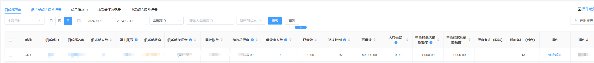
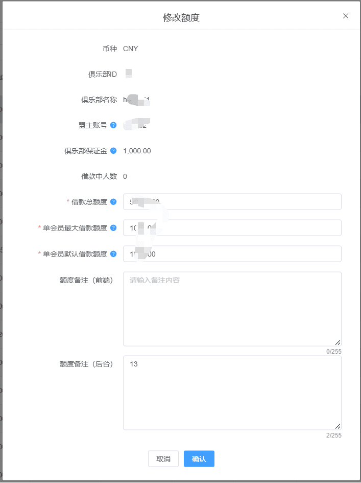
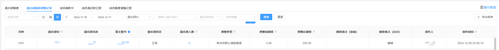
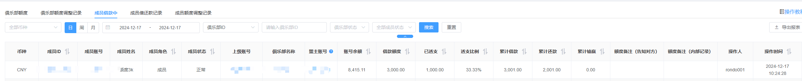
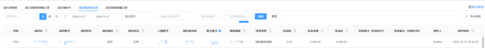
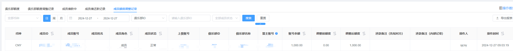

【信用联营】开启俱乐部+冲刺春节黄金时机的通知（人人坐庄）
前言
俱乐部说明
1、什么是俱乐部：
俱乐部是专门为传统线下庄家打造的信用平台（将颠覆线下传统庄家），让小庄家可以推给亲朋好友，由小庄家自负盈亏+赚取80-90%的利润，您只需每天稳稳的收租。
2、WG俱乐部优势：
传统的信用系统不能玩第三方游戏（例如：真人），WG全新信用联营系统同时不仅支持自定义LOGO、独立APP包、借款还款、成员无上限、独立客服、多级管理员、独立专属网址、支持第三方游戏、支持原生游戏、支持朋友房间局对战（如：德州扑克、斗地主、炸金花、即将上线掼蛋等等），第二期还支持自助上下分、成员返水、成员返佣等一系列功能。
3、低门槛（保证金决定一切)
盟主只要缴纳一定保证金就能申请俱乐部，且盟主只要不断充值保证金就可以让成员游戏顺畅；也避免恶意人员白嫖或逃单。俱乐部成员可以直接进入所有的第三方游戏含真人（第三方游戏带入金额和俱乐部保证金固定10:1，即当前可用保证金200，则成员最多可带入2000到第三方游戏，以免产生坏账）；而进入俱乐部原生对战游戏和WG原生游戏则不受保证金限制（即可任意进入，允许合理的坏账）。因为俱乐部对战和WG原生游戏不受保证金限制，若俱乐部盟主因此逃单坏账，且该俱乐部已经彻底注销或关闭，则站点无需向WG缴纳该跑单俱乐部的坏账。
4、分成比例：
因为俱乐部由盟主自负盈亏+催收缴费，所以盟主可以赚取80-90%的利润；但不同游戏类型站长和盟主的分成比例有所不同，第三方游戏和俱乐部原生对战游戏分成比例20%和80%（即盟主占80%收益），WG原生游戏则站长和盟主分成比例为10%和90%（即盟主占90%收益）。
5、可大大提高站内GDP：
因为传统线下庄家所发展的成员都是熟人，有很强的信任基础，他们对成员的身家资产也很熟悉，一般庄家都可以给下级成员开出较大的借款额度（10万身家的人可能只会在线充值500，但熟人线下可能授信5万额度），所以能大大的提高站内GDP。俱乐部的额度授信、借款金额、大额上下分都只是盟主与成员之间的账本记录，不会给站点带来任何坏账，因为保证金会限制第三方游戏带入量，成员要大量大额的到第三方游戏，则盟主就要不断的充值保证金和向成员催收欠款，完全不会影响到站内。所以俱乐部成员的上下分、借款和还款都可以视为俱乐部和站内的充值和提现。
6、彻底解决支付痛点：
因为俱乐部都是熟人与熟人直接相互推广，所以不受牌照限制；且充值和提现都是熟人与熟人之间线下转账，也不存在银行风控限制。
7、帮助娱乐城引流：
虽然俱乐部成员和娱乐城会员之间完全隔离，虽然没有直接宣传娱乐城品牌，但多了一层信任感，潜移默化的能给娱乐城带来源源不断的流程。
教程说明
1、俱乐部额度
该模块查看俱乐部额度使用情况，当前俱乐部可以借款给下级成员的额度。默认所有俱乐部数据。

借款总额度：是指当前俱乐部可以借款给下级成员的总额度；若额度不够用时，可向下级会员催收来收回额度，也可主动联系客服提高借款总额度，以便满足日常运营需要。举例说明：某俱乐部借款总额度是1,000,000，则该俱乐部所有成员的借款总额为1,000,000。
借款中人数：是指当前俱乐部成员属于已借款且还未还清的人数。点击跳转到成员借款中列表
已借款：该俱乐部已借款的总金额
透支比例：是指已借款除以借款总额度的百分比。举例说明：某俱乐部的借款总额度为2000，已借款800出去，则透支比例为：800/2000=40%。
可借款：借款总额度 - 已借款=可借款
人均借款：是指当前俱乐部已借款总金额除以借款中人数后的平均值；用于帮助分析设定单会员最大借款额度。计算公式：人均借款=已借款总金额 / 借款中人数
单会员最大借款额度：是指当前俱乐部单个成员最大借款的额度，所有下级成员的授信额度都必须小于等于此金额；用于防止人工操作失误或恶意配置导致产生不必要的账单，所以不是越大越好，而应适当配置（建议设置为人均借款的2倍）。举例说明：某俱乐部借款总额度为1,000,000，单会员最大借款额度设置5000，则俱乐部成员A最大的借款额度必须≤5000，即A的的借款额度只能在0-5000之间；若单会员最大借款额度原来5000想缩小为4000，而当前已有会员借款额度为5000，则必须手动把所有会员的借款额度都调整为4000或以内，才能再去修改此参数。
单会员默认借款额度：是指当前俱乐部可以借款给下级成员的总额度；若额度不够用时，可向下级会员催收来收回额度，也可主动联系客服提高借款总额度，以便满足日常运营需要。某俱乐部借款总额度是1,000,000，则该俱乐部所有成员的借款总额为1,000,000。
修改额度：即对俱乐部额度进行调整：借款总额度、单会员最大借款、单会员默认借款额度。界面如下图所示

2、俱乐部额度调整记录
该模块查看俱乐部额度所有调整记录，默认当天的数据。

3、成员借款中
该模块查看俱乐部成员已借款还未还款的数据，默认当天的数据。

4、成员借还款记录
该模块查看俱乐部成员所有借还款数据，默认当天的数据。

5、全部账单成员额度调整记录
该模块查看俱乐部成员额度调整记录，默认当天数据

附录：俱乐部的名词解释
俱乐部保证金
什么是俱乐部保证金？因为第三方游戏（包含WG体育）需要定期按比例缴付账单，为了防止坏账跑单或恶意消费，俱乐部需要缴纳一定保证金才能开通，保证金决定账单额度和可带入三方游戏额度（WG原生游戏和俱乐部游戏除外，即不受额度限制），所以缴纳的保证金越多，可带入第三方游戏的额度就越大；且账单结算后将自动扣除相应保证金，所以要不定期充入保证金，以保障俱乐部正常运转。计算公式：俱乐部保证金 = 未结算账单 +（可带入三方+已带入三方）/ 10。
举例说明：某俱乐部已缴纳5000保证金，当前未结算账单是1000，则已带入三方游戏和可带入三方游戏的最大额度是：(5000-1000)*10 = 40000。
已带入三方游戏
已带入三方游戏额度是指俱乐部携带余额到第三方游戏（包含WG体育）的所有成员金额的总和（不含WG原生游戏和俱乐部游戏），计算公式：已带入三方游戏额度 = A成员带入三方游戏的余额+B成员带入三方游戏的余额+...+N成员带入三方游戏的余额。
举例说明：某俱乐部有A、B和C三名成员，其中，A带着100余额到第三方游戏，B带着300余额到第三方游戏，则该俱乐部已带入三方游戏为：100+300=400。
可带入三方游戏
可带入三方游戏额度是指俱乐部当前未进入第三方游戏（包含WG体育）的成员未来可以携带余额第三方游戏的额度总和（不含WG原生游戏和俱乐部游戏），即可用保证金*10；计算公式：可带入三方游戏额度 = （俱乐部保证金 - 未结算账单）* 10 - 已带入三方游戏额度 = 可用保证金 * 10。
举例说明：某俱乐部已缴纳500保证金，当前未结算账单是100，有A、B和C三名成员，其中，A已带着100余额到第三方游戏，则当前俱乐部可带入三方游戏的总额度为：（（500-100）*10）-100 = 3900，即B和C成员未来最多可带入3900的余额到第三方进行游戏。
已占用
是指已占用的保证金，是当前未结算账单和已带入三方游戏（包含WG体育）两者已占用保证金的总和（即当前不可直接提现的保证金）。计算公式：已占用保证金 = 未结算账单 + 已带入三方/10。
举例说明：某俱乐部已缴纳500保证金，当前未结算账单是100，有A、B和C三名成员，其中A已带着400余额到第三方游戏，则当前俱乐部已占用保证金为：100 +（400/10） = 140。
可用保证金
是指当前俱乐部保证金扣除未结算账单和已带入三方游戏（包含WG体育）两者后剩余保证金数量（即可直接提现）。可用保证金决定成员未来可以带入第三方游戏的总额度，所以可用保证金越多，成员可带入第三方游戏的额度就越大。计算公式：可用保证金 = 俱乐部保证金 - 未结算账单 - 已带入三方/10 = 可带入三方游戏额度/10
举例说明：某俱乐部已缴纳500保证金，当前未结算账单是100，有A、B和C三名成员，其中，A已带着400余额到第三方游戏，则当前俱乐部可用保证金为：500-100 -（400/10） = 360，即当前俱乐部可带入三方游戏额度为：360*10=3600。
可用比例
是指当前俱乐部可用保证金除以俱乐部保证金的百分比。计算公式：可用比例 = 可用保证金 / 俱乐部保证金
举例说明：某俱乐部已缴纳500保证金，当前可用保证金300，则可用比例为：300 / 500 * 100% = 60%
单会员三方游戏最大带入
是指当前俱乐部单个成员未来可以携带余额进入第三方游戏（包含WG体育）的最大额度（不含WG原生游戏和俱乐部游戏）。
重要提示：1、单会员进入第三方游戏的额度并不是越大越好，而是根据俱乐部实际需要，防止单个会员占满整个俱乐部的三方游戏额度，导致影响其他成员的体验。2、成员到第三方游戏结束后，要提醒其正常返回大厅释放额度，以免中途异常退出继续占用额度。
举例说明：某俱乐部A成员当前余额1000，该会员三方游戏最大带入为600（假设俱乐部可用保证金充足）， 则A成员最多只能携带600到第三方游戏（剩余400留在大厅）；若俱乐部当前可用保证金30（即整个俱乐部可带入三方游戏只剩300），则A成员最多只能携带300到第三方游戏（剩余700留在大厅）。
专属网址
是与俱乐部品牌一对一绑定的网址，只有通过该网址才能正常访问俱乐部，且系统自动为俱乐部准备了多个专属网址（建议保存收藏）以便未来备用；若全部专属网址都无法打开，请联系客服添加新的网址。
是否允许借款
是指当前俱乐部是否可以借款给下级成员，即先游戏后付款结算，建议根据每个成员的信誉和实力进行配置，以免恶意坏账。
借款总额度
是指当前俱乐部可以借款给下级成员的总额度；若额度不够用时，可向下级会员催收来收回额度，也可主动联系客服提高借款总额度，以便满足日常运营需要。
举例说明：某俱乐部借款总额度是1,000,000，则该俱乐部所有成员的借款总额为1,000,000。
俱乐部已借款
是指俱乐部下级所有成员已向俱乐部借款金额的总和(即俱乐部成员的借款额度)。计算公式：俱乐部已借款=A的借款额度+B的借款额度+……+N的借款额度。
借款比例
是指已借款除以借款总额度的百分比。计算公式：借款比例= 已借款/借款总额度*100%。
举例说明：某俱乐部的借款总额度为2000，已借款800出去，则借款比例为：800/2000=40%。
可借款
是指俱乐部借款总额度减去下级所有成员已借款金额（即剩余额度）。计算公式：可借款=借款总额度-已借款。
举例说明：某俱乐部的总借款额度为1000，下级所有成员已借款300，则可借款为：1000-300=700
单会员最大借款额度
是指当前俱乐部单个成员最大借款的额度，所有下级成员的授信额度都必须小于等于此金额；用于防止人工操作失误或恶意配置导致产生不必要的账单，所以不是越大越好，而应适当配置（建议设置为人均借款的2倍）。
举例说明：某俱乐部借款总额度为1,000,000，单会员最大借款额度设置5000，则俱乐部成员A最大的借款额度必须≤5000，即A的的借款额度只能设置在0-5000；若单会员最大借款额度原来5000想缩小为4000，而当前已有会员借款额度为5000，则必须手动把所有会员的借款额度都调整为4000或以内，才能再去修改此参数。
借款中人数
是指当前俱乐部成员属于已借款且还未还清的人数。
人均借款
是指当前俱乐部已借款总金额除以借款中人数后的平均值；用于帮助分析设定单会员最大借款额度。计算公式：人均借款=已借款总金额 / 借款中人数。
累计借款
是指有史以来累计借款金额的总和。
累计还款
是指有史以来累计还款金额的总和。
盟主账号
是指俱乐部的创始人，盟主账号不允许投注，拥有俱乐部最高权限，且一旦创建无法修改或转让。
是否禁止管理员投注
是指是否禁止俱乐部非成员角色参与游戏下注（即副盟主和堂主等角色）。
是否开放注册
是指是否对外展示俱乐部的注册入口（是否允许外部人员注册），所有注册都必须由管理员逐一审核。
结算周期
是指俱乐部账单的结算周期，且推广返佣和个人返利的结算周期与账单一致；当前为：日结（即每天凌晨2点开始结算）/周结（每周一凌晨2点开始结算）/月结（每月1日凌晨2点开始结算）。
第三方游戏账单
是指结算周期内，俱乐部所有成员在第三方游戏（包括WG体育）亏损总额的一定比例为三方账单金额（即俱乐部第三方游戏盈利部分的20%），盟主需要充值保证金来交收该账单；若成员没有亏损则不产生账单，即账单金额为0。计算公式：第三方账单 = 俱乐部第三方游戏盈利 * 20%。
举例说明：某俱乐部成员A、B、C，结算周期后在第三方游戏中A输了1000，B输了200，C赢了400，则俱乐部需要缴纳第三方账单金额为（1000+200-400）*20%=160（俱乐部实际收益则是（1000+200-400）*80%=640）。
原生游戏账单
是指结算周期内，俱乐部所有成员在WG原生游戏（WG体育除外）亏损总额的一定比例为原生游戏账单金额（即俱乐部WG原生游戏盈利部分的10%），盟主需要充值保证金来交收该账单；若成员没有亏损则不产生账单，即账单金额为0。计算公式：原生游戏账单 = 俱乐部原生游戏盈利 * 10%。
举例说明：某俱乐部成员A、B、C，结算周期后在原生游戏中A输了1000，B输了200，C赢了400，则俱乐部需要缴纳第三方账单金额为（1000+200-400）*10%=80（俱乐部实际收益则是（1000+200-400）*90%=720）。
俱乐部游戏账单（房间）
因为俱乐部游戏都是成员与成员直接进行对战，俱乐部每一局游戏都会固定抽取胜利方所赢金额的2%作为俱乐部的收益，所以结算周期内，俱乐部所抽取的收益总额的一定比例为俱乐部游戏账单金额（即俱乐部俱乐部收益部分的20%），盟主需要充值保证金来交收该账单。计算公式：俱乐部游戏账单 =每一局胜利方所赢金额*2% * 20%。
举例说明：某俱乐部成员A、B、C一起对战，某一局游戏中A赢了800（B输给A500，C输给A300），则俱乐部需要缴纳俱乐部游戏账单金额为800*2%*20%=3.2（俱乐部实际收益则是800*2%*80%=12.8）。
本期账单
是指同一个结算周期内第三方游戏账单、原生游戏账单、俱乐部游戏账单三者的总和。
交收比例
是指俱乐部所盈利金额中需要支付平台费用的比例（即账单比例），其中，三方游戏、原生游戏和俱乐部游戏的交收比例均不同。
三方游戏交收比例
是指俱乐部在第三方游戏盈利金额中需要支付平台费用的比例（即账单比例），固定为20%。
原生游戏交收比例
是指俱乐部在WG原生游戏盈利金额中需要支付平台费用的比例（即账单比例），固定为10%。
俱乐部游戏交收比例
是指俱乐部在俱乐部游戏抽取的收益中需要支付平台费用的比例（即账单比例），固定为20%。
三方游戏输赢
是指在一个结算周期内，俱乐部所有成员在第三方游戏中的亏损总额（即俱乐部第三方游戏盈亏金额）。
原生游戏输赢
是指在一个结算周期内，俱乐部所有成员在WG原生游戏中的亏损总额（即俱乐部WG原生游戏盈亏金额）。
俱乐部游戏抽取收益
是指在一个结算周期内，俱乐部所有成员在俱乐部游戏中被抽取的总金额（即俱乐部游戏抽取的收益）。
待支付
是指结算周期后，俱乐部已经产生的账单，但还未用保证金结清的状态。
进行中
是指结算周期前，俱乐部正在产生的账单。
已坏账（后台出现）
是指俱乐部未按约定缴付账单（即盟主坏账或逃单），因三方游戏账单有保证金兜底，所以坏账一般只出现在WG原生游戏或俱乐部游戏，一旦标记坏账，整个俱乐部将被强制冻结，且站点也无需支付坏账部分给WG平台（即原生游戏和俱乐部游戏坏账的，只要强制冻结俱乐部即可免除坏账部分）。
未结算账单
是指该俱乐部待支付账单和进行中账单总和。
提前结算
是指结算周期前，俱乐部突然性产生大额账单的，可以充值保证金来提前结算，以保障成员有好的第三方游戏体验。
待结算
是指本期账单需要结算的金额。